For developers validating LeRobot policies on Jetson: choose what to validate first, see what still blocks deployment, and plan the next test.
745 real-arm trialsJetson Orin Nano Super · 15 W · TRT 10.3ACT 51.6M · SO-101G6 trials completed: 245measured snapshot 2026-10-22
Review: what to validate, whether it can deploy, what to test next
written by code from committed evidence · measured snapshot 2026-10-22
Evidencewhat the arm and the device showed
The build passed. Did the robot do the same thing?
what changes without an error · each row from a committed record
None of these raises an error: the log looks normal and the engine loads. Only a check on the arm, or on the inputs, showed that the behavior had changed.
What changedWhat it didWhat caught it
normalization · fault injectionAnother policy's normalization file next to the engine
engine loads →wrong inputs to the policyThe engine would load without an error, and every observation would be scaled for a different policy. Injected on purpose; never run on the arm.
Why a can on a coaster? It started as a small gesture: an arm that brings a drink to someone working hard. Setting it down properly on the coaster turned out to be the hard part. Then the policy had to run on a small edge device, and we wanted to know whether it would still put the can down right, and how sure we could be.
Evidence before deployment. QuantGate helps a robot developer decide which precision of a policy
to ship on an edge device. It shows the engine's cost, its real-arm behavior and the strength of the evidence side
by side. Everything below was measured on a real SO-101 arm: 745 real-arm trials from sealed, interleaved schedules (operator blinding partial in the fine-tune blocks), engine costs on the
Jetson, and how well the offline audit and the AI judge predicted what happened. No robot needed to try it: pick a candidate in the Review panel above.
For teams shipping learned robot policies to edge devices. Every new build is checked before it reaches the arm: the preflight (quantgate.py preflight) blocks a build whose engine hash, normalization files or timing do not match what was audited, with no GPU or API key.
successthe can ends upright on the coaster (overhead camera, 4× speed)failuresame robot, same task: the can is knocked over (overhead camera, 4× speed)
Engine cost on the deployment target
Jetson Orin Nano Super, 15 W · trtexec · tegrastats 100 ms · power_bench/SUMMARY.md
FP16 is the fastest and the cheapest per inference. INT8 draws about 1 W less while it runs
but takes 45% longer, so each inference costs more. The three INT8 calibrations cost the same.
GPU compute median ms per 100-step chunk
Inference energy mJ per inference, above idle (4.86 W)
End to end in the trial runner, including preprocessing and the socket round trip, the same order holds: FP16 24.7 ms, INT8 34.3 ms
and FP32 79.0 ms (FP16 block). On the real arm FP16 succeeded 19/20, with placement within tolerance of FP32.
Closed-loop success by cell
G6 · g6_analysis.json
FP32 and ten INT8 cells, interleaved in one blinded session. Every interval overlaps FP32. At these
sample sizes no cell can be shown to be within 10 pp of FP32 either, so each one is "insufficient evidence", not "safe".
The INT8 cells differ only in calibration: sample count, data composition and per-tensor or per-channel scaling.
Dot = success rate, whisker = Wilson 95% CI. Right columns: successes / trials and mean placement
error (base distance from coaster center, px).
Did the offline rank predict the arm?
EX-4 / AEP Q3 · 10,000 permutations
Each point is one INT8 cell: frozen score_mag rank (1 = best fidelity) against its real mean
placement error.
Best vs worst fidelity on placement (AEP Q1, E2): −0.84 px, 97.5% CI [−2.53, +0.88],
tolerance-compatible with the 5 px tolerance. On success (E1) the ceiling rule applies, so the decision is
indeterminate. The AEP claim is not falsified here.
What moved the success rate
G6 + public stress tallies
The same arm and the same policy. Between precisions no success difference was detected. Grip friction and
a 3 cm shift moved a lot. The gripper and shift blocks are separate sessions, so read them as observations, not
as a randomized comparison.
Wilson 95% CI. Unseen can: a 190 g, 50 mm yellow can never seen in training, at the trained start mark; all four engines 12/12. Outcomes use the consensus re-judge (protocol §11).
Where the fine-tune works, on the table
overhead camera · blinded, pre-registered · 12 vs 12 per mark
Each mark is a start position the can was placed on. Bars show success out of 12 for the fine-tuned policy and the old policy; the shaded band is where the fine-tune's demonstrations were. The first fix reached −6 cm, but not +6 cm or the smaller yellow can; fine-tune v2 closed both.
fine-tuned (FT-FP16)old policy (FP16)fine-tune v2 (FT2-FP16, tested against FT)fine-tune demonstrations −4…+4 cm
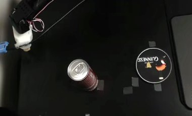
Physical failures we found and publish
each one changed what the review says
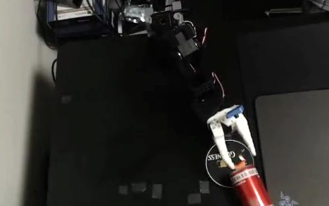
Gripper frictionpads removed: 8/24 · rubber bands: 23/24The same engine; only the fingertips changed. Grip is a deployment condition.
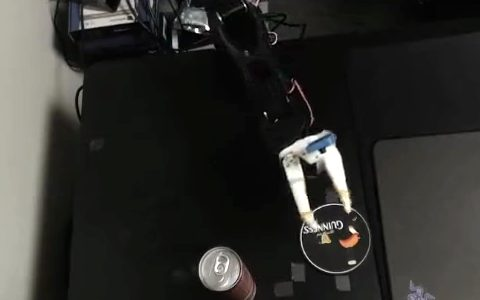
A 3 cm start shift0/3 in the first tries · fixed: 12/12 vs 3/12The policy had memorized one spot. Fifty new demonstrations fixed it, within a range.
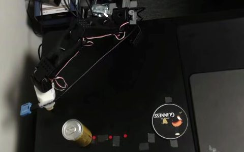
A smaller can, off the markfirst fine-tune 0/12 · fine-tune v2 12/12 (vs FT 7/12)Photo from the first block, when stray red markers were on the table; the re-test removed them.At the trained mark the same can worked 48/48; off the mark it did not, until 50 more demonstrations with this can.
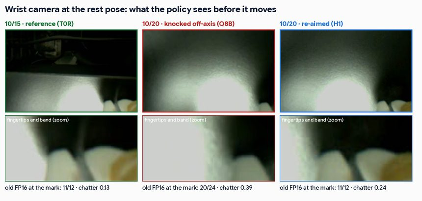
A knocked wrist camerachatter 0.39 knocked · 0.11 after fixing the mountSuccess fell with no software change. Results stayed sealed while we found the cause.
Trial footage
overhead camera · full 60 s trials · real time
Unedited overhead videos of single trials, re-encoded for the browser. The clips do not name the
engine. Every block shown here has been unsealed; outcomes are in the panels above.
How the policy learned: teleoperated demonstrationstraining data
Three of the 120 real demonstrations in the locked dataset (LOCK-1), at real time: the overhead camera (left)
and the wrist camera (right). The ACT policy is trained on both views.
LOCK-1 dataset · episodes 0, 47, 102 · 1×
Nominal successsuccess
A G6 blinded trial. The can stands 6.8 px from the coaster center.
G6 main trial 12
Knocked over on withdrawalfailure
The can was placed, then the gripper tipped it over while pulling back. Shown the final frame, Cosmos-Reason2
answered "Yes", meaning the can is standing.
G6 main trial 186
No anti-slip padsfailure
Nominal scene with the gripper pads removed. The can drops while being carried. The block finished 8/24.
stress v1 S0 trial 5
Rubber-band grippersuccess
The same scene with rubber bands on the fingers. The can sits about 20 px off center, inside the 35 px target.
The block finished 23/24.
stress v2 S0 trial 1
Position fine-tune at +3 cmcounted trials
Side view of two consecutive counted trials in the blinded T1 block. The old policy (left) leaves the can tilted on the coaster edge and keeps moving. The fine-tuned policy (right) stands it upright in about 17 s. Block result: 12/12 vs 3/12.
T1 trials 2 (old) and 1 (fine-tuned) · phone side view · 1×
Start moved 3 cmfailure
The policy first closes on empty air at the trained start spot, then knocks the can over while re-grasping.
stress v2 S1 trial 1
Cola can vs unseen yellow can, side by sideS4 48/48
Stress v2 with the rubber-band gripper: S0 trial i (left) next to S4 trial i (right), each full trial at 4× speed.
Shown: the first 11 pairs. All 48 S4 trials succeeded.
stress v2 S0 + S4 trials 1–11 · 4×
How it workswhich model does what, and the checks before the arm
Architecture: what runs where
the system view · the steps are in the workflow below
The arm and the Jetson produce the evidence, Nebius runs the training, the audit and the two AI models, and code in the repository turns sealed logs into every verdict and number. Colours: orange is the real arm or device, purple an AI model, teal plain code.
Four rules the code enforces
in the code and its tests, not only in the interface
01
Only an explicit GO passes
Every other finding holds or blocks, and so does an unknown label. Undecided is its own result, never a pass: 19/20 vs 10/10 is HOLD, with the next test sized at 120 trials per arm.
Cell assignments are sealed before a trial runs, and each log is hashed after the lock. verify re-checks all 22 sealed logs against their post-lock hashes.
Models suggest and describe; code decides. Every number and verdict comes from code over committed, hashed evidence. Click a step to open its evidence; pick a candidate in the Review panel to see which steps decided it.
One candidate card, four checks in order: the engine hash against the recorded build, the runner's own
normalization guard, the runner's chunk deadline (10−4 steps at 30 Hz = 200 ms), and the
code-decided evidence verdict. Only an explicit GO passes. BLOCK stops the deployment (also for any unknown verdict). HOLD means "run the trials listed"; an improvement is not approval. Rows marked FAULT INJECTION are deliberately broken copies, not observed failures.
Case
Deployment decision
Checks · evidence finding
nominal FP16 (VC-025) as measured
HOLD
✓ engine integrity → ✓ normalization → ✓ timing contract → evidence: insufficient under the current rule INSUFFICIENT_EVIDENCE: Settle success against FP32 at 10 pp: plan about 110-120 trials per arm (planning estimate, assumes equal true rates near 96-97 percent; not a guarantee); also validate start-position changes before deployment
✓ engine integrity → ✓ normalization → ✗ timing contract p95 on the Pi 5 264 ms vs chunk deadline 200 ms
evidence: fine-tuned policy, improvement at +3 cm FT-FP16, improvement detected; training mark undecided
HOLD
✓ engine integrity → ✓ normalization → ✓ timing contract → evidence: improvement detected, not approval IMPROVEMENT_DETECTED is not approval: The candidate to validate next where the start position varies, not yet a replacement: settle the training mark, then confirm at more positions and objects
✓ engine integrity → ✓ normalization → ✓ timing contract → ✗ evidence: flagged FLAGGED: Do not deploy; fix the calibration input (a simple input check catches it); see the real-arm check of PC-B
Tried on other data
usability tests, 2026-10-24 to 10-26 · run by AI reviewers and with the author
Not independent user validation, and not a robot reproduction. Reviewers ran the tools on a fresh install and on public logs from three other projects, then reported where they stopped. Each finding was fixed and pinned by a test. No other team has yet connected its own robot. Details: docs/user_tests.md.
DataWhere it stoppedWhat changed
public simulation eval · 300 tasks × 2 methodsvplan
Null outcomes; the same task under both methods refused as a duplicate; config 3 did not match the name "3".
A rule per source for nulls, --pair for paired tasks, names compared as text. A paired design is a preview only, never GO.
public real-robot episodes · 113 keptPhAIL
A 50% planning floor labelled "observed" (26.3% was); models recorded under their own conditions; a CSV column named eval.outcome; text outcomes.
Observed and planning rates reported apart. collection=observational is a preview. CSV input, --map for text outcomes, --where, and a per-row --audit.
public simulation · 200 seeds, before and afterWind Tunnel
73/200 → 154/200The average hid 3 seeds that got worse, and a column of safety counts was refused.
Per-pair changes and regressed trial ids next to the decision. Safety counts only where they were recorded, and not provided when absent. Shown, not used in the decision.
Defects these tests exposed, each of which could have turned HOLD into GO, all fixed: a typo in mode or in its column name; the same trial log counted 20 times; a preview row whose finding still said GO and reached the preflight; a tolerance that never reached the sample-size plan (5 pp at 120 per arm has about 30% power, not 80%). A negative latency also passed the preflight.
Audit recordthe full review, the report, locks, setup and provenance
Experiment recordLOCK-3 passed. G6, the stress tests, FP16, the positive control and the position fine-tune are unsealed and analyzed.
The cell-to-engine map was opened only after all 245 trials were logged and hashed. The stress tests and the FP16
run were unsealed on 10-13, the position fine-tune (T1, T0 and T2) on 10-14 after all three blocks were hashed, its replication (T0R) on 10-15 the reach blocks (TYP, T6P, T6M) on 10-18, the INT8 chatter block (Q8B) on 10-20 and the reach re-tests (T6PR, TYPR) on 10-21 and fine-tune v2 (TYP2, T6P2, T0G) on 10-22, each after its post-run hash was committed.
Deployment review
ACT pick-and-place policy · Jetson Orin Nano Super 15 W · as of 2026-10-22
A review aid, not an automatic approval. It answers the developer's three questions, keeping the
cost recommendation separate from the deployment approval. The lines below give the evidence.
Which candidate do I validate first?FP16 (VC-025)Cheapest on this Jetson, 19/20 on the arm, placement within tolerance of FP32.recommended
Which candidates do I distrust?Calibration anomaliesBlack-frame and noise calibrations are flagged offline: by a simple input check, and by action MSE and both audit scores (thresholds set on the 24 normal cells). On the arm, PC-B went 11/12 against FP32 10/12, so the warning is not confirmed (unresolved). Reject such builds at the input check anyway.flagged
Can I approve deployment?Not yetSuccess against FP32 is undecided for every candidate at these sample sizes. The position fine-tune fixed the start-shift weakness, but whether it keeps nominal performance is still undecided.on hold
If you choose by…
You would pick
What that misses (from this study's records)
Latency only
FP16 (11.6 ms, 82 mJ)
Nothing about success: the FP16 comparison with FP32 is undecided (19/20 vs 10/10), and the start-position weakness (0/3 at +3 cm) is invisible.
Offline audit score
The top-ranked INT8 cells
No measurable gain: audit-picked cells went 73/75, random cells 73/75. The rank did not predict placement either (Spearman 0.02–0.08).
"No failures seen"
Any cell at 24/25 or 25/25
About ±28 pp of uncertainty at 25 trials against a 10 pp tolerance. More trials alone will not settle it: the pre-registered ceiling rule keeps two arms both at ≥ 95% undecided; a revised rule plus about 110–120 trials per arm would.
QuantGate review
FP16 to validate first, approval on hold
It adds what remains: the trials still needed, the weak conditions (grip friction, start position), the builds to block at the input check, the runtime's 200 ms timing contract, and how far to rely on the AI judge.
This is a post-hoc reading of records already in this study, not a new experiment. The point is not that QuantGate picks a different candidate than latency does. It is that QuantGate says what the evidence does and does not support yet.
CostFP16 (VC-025) is the cheapest engine on this device: 11.6 ms and 82 mJ per inference, against 16.8–17.1 ms and 101 mJ for the three INT8 builds benched (the other 21 were not) and 53.4 ms and 403 mJ for FP32 (trtexec, back-to-back). At the deployed rate, one chunk about every 3 s, inference energy is a small part of system power.measured
Real armFP16 on the real arm: 19/20 against FP32 10/10 and INT8 10/10, in one interleaved blinded session with the current gripper. Placement is within the 5 px tolerance of FP32 (−0.63 px, CI [−2.64, +1.37]). The success difference cannot be decided at this sample size (CI ±28 pp), so the verdict is insufficient evidence, not falsified. End to end in the runner, FP16 takes 24.7 ms per chunk against 34.3 ms for INT8 and 79.0 ms for FP32. In G6, against FP32 at 10 pp, every one of the 10 INT8 cells is also insufficient evidence.insufficient
PlacementMean placement error stays within the 5 px tolerance of FP32 for 8 of 10 INT8 cells. The other 2 are indeterminate. Best vs worst audit fidelity: −0.84 px, CI [−2.53, +0.88].8 / 10 ok
Verified forThe 268 g cola can at the trained start mark, the fixed coaster, locked camera exposure and indoor desk light, with anti-slip pads (G6) and with rubber bands (stress v2: nominal 23/24, unseen 190 g yellow can 48/48 with every engine 12/12).scope
Weak spotsGrip friction: 8/24 with no pads. Start position: 0/3 in a small test with the start moved 3 cm, and the old policy went 3/12 at +3 cm and 2/12 at −3 cm in the blinded fine-tune evaluation. A new object of a different size succeeded 48/48.observed
Fine-tuneThe position fine-tune fixed the shift: 50 new demos at −4…+4 cm, 20k steps on Nebius Jobs. Blinded and interleaved, at positions not in training: 12/12 vs 3/12 at +3 cm (+75 pp, Newcombe 95% [+38, +91]) and 10/12 vs 2/12 at −3 cm (+67 pp [+27, +84]); improvement detected on both sides. At the training mark 10/12 vs 12/12, insufficient evidence; an independent replication (T0R, pre-registered) went 12/12 vs 11/12, so the two T0 failures did not repeat, but pooled 22/24 vs 23/24 is still insufficient evidence. Reach (amendment 7): −6 cm 8/12 vs 0/12 (improvement detected), but +6 cm 0/12 vs 0/12 and a smaller yellow can at +3 cm 0/12 vs 3/12 (not detected). Re-test (amendment 8) after removing a scene deviation (stray red markers, a knocked wrist camera): +6 cm 0/12 vs 0/12 and the yellow can 0/12 vs 0/12, the same no-gain readings. Fine-tune v2 (amendment 9: 50 more demos with the yellow can and at +5/+7 cm) then closed both gaps against FT: yellow can 12/12 vs 7/12 (+42 pp [+9, +68]) and +6 cm 12/12 vs 2/12 (+83 pp [+46, +95]), with a 12/12 vs 12/12 guard at the training mark. FT did better in that session than before, so part of the earlier gap was the scene. Operator blinding was partial: the two motions looked different.improved
AI judgeFirst setup (final frame, one-word answer): 1 of 21 held-out failures caught. Re-evaluated with a dev/eval split: an explicit-criterion prompt caught 20/21 (95% 0.77–0.99) with 5/252 false alarms, concentrated on the unseen yellow can (4/33). It is wording-sensitive and judges the end state only, so re-validate before use. Live and prospective check on 96 new fine-tune trials: 22/24 failures caught, 2/72 false alarms (369 ms median). Other objects and scenes are still open.conditional
Review costAbout $31 of Nebius cloud in total, mostly the Cosmos endpoint (16.5 h, $25.6); training and fine-tune on Jobs $4.5, Token Factory $0.1 (lower bound), MLflow $0.7. Real arm: 745 trials in about 18.6 operator-hours. For scale, not as a saving: settling approval for every candidate against FP32 would take about 2,990 trials and 73 arm-hours; this review did not settle approval.review_cost.md
Next 1. To settle FP16 against FP32 on success: more trials alone will not do it, because the pre-registered ceiling rule keeps two arms both at ≥ 95% undecided. Pre-register a revised rule (for example a bound on the failure-rate difference), then plan about 110–120 trials per arm for a 10 pp interval (a planning estimate, not a guarantee). 2. Settle the position fine-tune's nominal performance at the training mark (pooled with the T0R replication: 22/24 vs 23/24, undecided) with a larger block, then test more positions and objects. 3. Re-validate the judge prompt on other objects and scenes. 4. Put a calibration-input check first in the pipeline.actions
Deployment report
D3 v3 · code writes verdicts and numbers, Nemotron explains in words
Read the full report (sections 1–6)
Generated by scripts/d3_report_v3.py: sections 1–4 (verdicts, numbers, status, next actions) are written by code from the verdict table (hash 55f0eeb76289c82d). Sections 5–6 are written by Nemotron 3 Super on Token Factory (35.3 s) and checked by code for digits, verdict labels, approval words and known misreadings: 0 findings. They are never a source of verdicts or numbers. Figures are drawn by code.
1. Recommendation (written by code)
FP16 is the recommended precision to validate first (cheapest on the device). The position fine-tune (FT-FP16, same FP16 engine cost) fixed the start-position weakness at both held-out shifts (IMPROVEMENT_DETECTED at +3 cm and -3 cm), so FT-FP16 is the candidate to validate next where start positions vary. Fine-tune v2 (FT2-FP16) then closed the two gaps the first fine-tune left, the yellow can and a start at +6 cm (IMPROVEMENT_DETECTED against FT-FP16 for both, in one session), so FT2-FP16 is the candidate to validate next for those conditions. Approval is a separate status: on hold, because every comparison against full precision is INSUFFICIENT_EVIDENCE and the fine-tunes' nominal performance is undecided.
2. Verdict per candidate (written by code)
Each success interval is a Newcombe interval for candidate minus reference, in percentage points; its confidence level and decision rule are printed on the row, because comparisons against full precision test non-inferiority (10 pp) and the fine-tune rows test improvement. End-to-end latency is the runner's per-chunk time on the arm; GPU time is trtexec on the device (15 W).
VC-002 · G6 nominal, pads · INSUFFICIENT_EVIDENCE · success 24/25 against reference 24/25 · candidate − reference +0.0 pp, 99.75% interval [-28.5, +28.5] pp (non-inferiority at a 10 pp tolerance: within tolerance if the lower bound is above -10 pp, degraded if the upper bound is below -10 pp, else undecided (the verdict also uses placement)) · placement: tolerance compatible · end-to-end 34.3 ms · GPU time on device 16.8 ms (artifacts/reports/g6_q2_sensitivity.json#Q2.VC-002)
VC-020 · G6 nominal, pads · INSUFFICIENT_EVIDENCE · success 24/25 against reference 24/25 · candidate − reference +0.0 pp, 99.75% interval [-28.5, +28.5] pp (non-inferiority at a 10 pp tolerance: within tolerance if the lower bound is above -10 pp, degraded if the upper bound is below -10 pp, else undecided (the verdict also uses placement)) · placement: tolerance compatible · end-to-end 34.3 ms · GPU time on device 16.8 ms (artifacts/reports/g6_q2_sensitivity.json#Q2.VC-020)
VC-010 · G6 nominal, pads · INSUFFICIENT_EVIDENCE · success 25/25 against reference 24/25 · candidate − reference +4.0 pp, 99.75% interval [-23.0, +32.3] pp (non-inferiority at a 10 pp tolerance: within tolerance if the lower bound is above -10 pp, degraded if the upper bound is below -10 pp, else undecided (the verdict also uses placement)) · placement: tolerance compatible · end-to-end 34.3 ms (artifacts/reports/g6_q2_sensitivity.json#Q2.VC-010)
VC-011 · G6 nominal, pads · INSUFFICIENT_EVIDENCE · success 24/25 against reference 24/25 · candidate − reference +0.0 pp, 99.75% interval [-28.5, +28.5] pp (non-inferiority at a 10 pp tolerance: within tolerance if the lower bound is above -10 pp, degraded if the upper bound is below -10 pp, else undecided (the verdict also uses placement)) · placement: tolerance compatible · end-to-end 34.6 ms (artifacts/reports/g6_q2_sensitivity.json#Q2.VC-011)
VC-012 · G6 nominal, pads · INSUFFICIENT_EVIDENCE · success 24/25 against reference 24/25 · candidate − reference +0.0 pp, 99.75% interval [-28.5, +28.5] pp (non-inferiority at a 10 pp tolerance: within tolerance if the lower bound is above -10 pp, degraded if the upper bound is below -10 pp, else undecided (the verdict also uses placement)) · placement: tolerance compatible · end-to-end 34.3 ms (artifacts/reports/g6_q2_sensitivity.json#Q2.VC-012)
VC-015 · G6 nominal, pads · INSUFFICIENT_EVIDENCE · success 25/25 against reference 24/25 · candidate − reference +4.0 pp, 99.75% interval [-23.0, +32.3] pp (non-inferiority at a 10 pp tolerance: within tolerance if the lower bound is above -10 pp, degraded if the upper bound is below -10 pp, else undecided (the verdict also uses placement)) · placement: indeterminate · end-to-end 34.6 ms (artifacts/reports/g6_q2_sensitivity.json#Q2.VC-015)
VC-005 · G6 nominal, pads · INSUFFICIENT_EVIDENCE · success 14/15 against reference 24/25 · candidate − reference -2.7 pp, 99.75% interval [-41.7, +26.2] pp (non-inferiority at a 10 pp tolerance: within tolerance if the lower bound is above -10 pp, degraded if the upper bound is below -10 pp, else undecided (the verdict also uses placement)) · placement: tolerance compatible · end-to-end 34.5 ms · GPU time on device 17.1 ms (artifacts/reports/g6_q2_sensitivity.json#Q2.VC-005)
VC-007 · G6 nominal, pads · INSUFFICIENT_EVIDENCE · success 15/15 against reference 24/25 · candidate − reference +4.0 pp, 99.75% interval [-34.0, +32.3] pp (non-inferiority at a 10 pp tolerance: within tolerance if the lower bound is above -10 pp, degraded if the upper bound is below -10 pp, else undecided (the verdict also uses placement)) · placement: tolerance compatible · end-to-end 34.6 ms (artifacts/reports/g6_q2_sensitivity.json#Q2.VC-007)
VC-022 · G6 nominal, pads · INSUFFICIENT_EVIDENCE · success 10/10 against reference 24/25 · candidate − reference +4.0 pp, 99.75% interval [-43.9, +32.3] pp (non-inferiority at a 10 pp tolerance: within tolerance if the lower bound is above -10 pp, degraded if the upper bound is below -10 pp, else undecided (the verdict also uses placement)) · placement: indeterminate · end-to-end 34.3 ms (artifacts/reports/g6_q2_sensitivity.json#Q2.VC-022)
VC-024 · G6 nominal, pads · INSUFFICIENT_EVIDENCE · success 9/10 against reference 24/25 · candidate − reference -6.0 pp, 99.75% interval [-53.4, +23.7] pp (non-inferiority at a 10 pp tolerance: within tolerance if the lower bound is above -10 pp, degraded if the upper bound is below -10 pp, else undecided (the verdict also uses placement)) · placement: tolerance compatible · end-to-end 34.1 ms (artifacts/reports/g6_q2_sensitivity.json#Q2.VC-024)
VC-025 · FP16 run, rubber bands · INSUFFICIENT_EVIDENCE · success 19/20 against reference 10/10 · candidate − reference -5.0 pp, 97.5% interval [-27.3, +28.7] pp (non-inferiority at a 10 pp tolerance: within tolerance if the lower bound is above -10 pp, degraded if the upper bound is below -10 pp, else undecided (the verdict also uses placement)) · placement: tolerance compatible · end-to-end 24.7 ms · GPU time on device 11.6 ms (artifacts/reports/fp16_analysis.json#primary_fp16_vs_fp32)
VC-002 · stress S4 unseen can · INSUFFICIENT_EVIDENCE · success 12/12 against reference 12/12 · candidate − reference +0.0 pp, 99.58% interval [-40.6, +40.6] pp (non-inferiority at a 10 pp tolerance: within tolerance if the lower bound is above -10 pp, degraded if the upper bound is below -10 pp, else undecided (the verdict also uses placement)) · placement: tolerance compatible · GPU time on device 16.8 ms (artifacts/reports/stress_v2_analysis.json#S4.secondary_vs_fp32.VC-002)
VC-005 · stress S4 unseen can · INSUFFICIENT_EVIDENCE · success 12/12 against reference 12/12 · candidate − reference +0.0 pp, 99.58% interval [-40.6, +40.6] pp (non-inferiority at a 10 pp tolerance: within tolerance if the lower bound is above -10 pp, degraded if the upper bound is below -10 pp, else undecided (the verdict also uses placement)) · placement: tolerance compatible · GPU time on device 17.1 ms (artifacts/reports/stress_v2_analysis.json#S4.secondary_vs_fp32.VC-005)
VC-020 · stress S4 unseen can · INSUFFICIENT_EVIDENCE · success 12/12 against reference 12/12 · candidate − reference +0.0 pp, 99.58% interval [-40.6, +40.6] pp (non-inferiority at a 10 pp tolerance: within tolerance if the lower bound is above -10 pp, degraded if the upper bound is below -10 pp, else undecided (the verdict also uses placement)) · placement: tolerance compatible · GPU time on device 16.8 ms (artifacts/reports/stress_v2_analysis.json#S4.secondary_vs_fp32.VC-020)
PC-B · positive control real arm · INSUFFICIENT_EVIDENCE · success 11/12 against reference 10/12 · candidate − reference +8.3 pp, 97.5% interval [-25.8, +41.5] pp (non-inferiority at a 10 pp tolerance: within tolerance if the lower bound is above -10 pp, degraded if the upper bound is below -10 pp, else undecided (the verdict also uses placement)) · placement: tolerance compatible · end-to-end 34.5 ms (artifacts/reports/positive_control_analysis.json#comparison)
FT-FP16 · fine-tune vs old, start +3 cm (held out, primary) · IMPROVEMENT_DETECTED · success 12/12 against VC-025 (old policy) 3/12 · candidate − reference +75.0 pp, 95% interval [+37.8, +91.1] pp (improvement detected if the lower bound is above 0) · GPU time on device 11.6 ms (artifacts/reports/ft_analysis.json#T1.primary)
FT-FP16 · fine-tune vs old, start -3 cm (held out, symmetry) · IMPROVEMENT_DETECTED · success 10/12 against VC-025 (old policy) 2/12 · candidate − reference +66.7 pp, 95% interval [+26.9, +83.6] pp (improvement detected if the lower bound is above 0) · GPU time on device 11.6 ms (artifacts/reports/ft_analysis.json#T2.primary)
FT-FP16 · fine-tune vs old, training start mark (secondary) · INSUFFICIENT_EVIDENCE · success 10/12 against VC-025 (old policy) 12/12 · candidate − reference -16.7 pp, 97.5% interval [-49.0, +15.4] pp (non-inferiority at a 10 pp tolerance: within tolerance if the lower bound is above -10 pp, degraded if the upper bound is below -10 pp, else undecided (the verdict also uses placement)) · placement: indeterminate · GPU time on device 11.6 ms (artifacts/reports/ft_analysis.json#T0.secondary)
FT-FP16 · fine-tune vs old, training start mark, T0 + T0R pooled (replication) · INSUFFICIENT_EVIDENCE · success 22/24 against VC-025 (old policy) 23/24 · candidate − reference -4.2 pp, 97.5% interval [-25.3, +16.3] pp (non-inferiority at a 10 pp tolerance: within tolerance if the lower bound is above -10 pp, degraded if the upper bound is below -10 pp, else undecided (the verdict also uses placement)) · placement: indeterminate · GPU time on device 11.6 ms (artifacts/reports/ft3_analysis.json#pooled_T0_T0R)
FT2-FP16 · fine-tune v2 vs fine-tune, yellow can at +3 cm (held out, primary) · IMPROVEMENT_DETECTED · success 12/12 against FT-FP16 (first fine-tune) 7/12 · candidate − reference +41.7 pp, 95% interval [+8.7, +68.0] pp (improvement detected if the lower bound is above 0) (artifacts/reports/ft6_analysis.json#TYP2.test)
FT2-FP16 · fine-tune v2 vs fine-tune, start +6 cm (held out, secondary) · IMPROVEMENT_DETECTED · success 12/12 against FT-FP16 (first fine-tune) 2/12 · candidate − reference +83.3 pp, 95% interval [+46.2, +95.3] pp (improvement detected if the lower bound is above 0) (artifacts/reports/ft6_analysis.json#T6P2.test)
The action-MSE and audit-score thresholds were set on the same 24 normal cells, so '0 normal cells flagged' holds by construction; only the input check is independent of that set.
AI judge: Cosmos-Reason2 end-of-trial judge, held-out eval of 273 recorded trials (artifacts/cosmos_judge/eval_scores.jsonl): first setup 1/21 failures caught; validated prompt C1 p1 20/21 caught, 5/252 false alarms, 4 of them on the unseen yellow can (4/33). Wording-sensitive; end state only. Re-checked live and prospectively in the fine-tune evaluation (96 new trials, T1/T0/T2/T0R): 22/24 failures caught, 2/72 false alarms (artifacts/reports/ft_cosmos_live_judge.json; T0R in ft3_analysis).
4. Next actions (written by code)
More trials alone will not settle this: under the pre-registered ceiling rule, two arms both at or above 95 percent stay undecided at any sample size. Settling it needs a revised, pre-registered rule (for example a bound on the failure-rate difference); about 110-120 trials per arm would then give a 10 pp interval (planning estimate, not a guarantee) — VC-002 (G6 nominal, pads), VC-020 (G6 nominal, pads), VC-010 (G6 nominal, pads), VC-011 (G6 nominal, pads), VC-012 (G6 nominal, pads), VC-015 (G6 nominal, pads), VC-007 (G6 nominal, pads), VC-022 (G6 nominal, pads), VC-002 (stress S4 unseen can), VC-005 (stress S4 unseen can), VC-020 (stress S4 unseen can)
Settle success against FP32 at 10 pp: plan about 110-120 trials per arm (planning estimate, assumes equal true rates near 96-97 percent; not a guarantee) — VC-005 (G6 nominal, pads), VC-024 (G6 nominal, pads)
More trials alone will not settle this: under the pre-registered ceiling rule, two arms both at or above 95 percent stay undecided at any sample size. Settling it needs a revised, pre-registered rule (for example a bound on the failure-rate difference); about 110-120 trials per arm would then give a 10 pp interval (planning estimate, not a guarantee); also validate start-position changes before deployment — VC-025 (FP16 run, rubber bands)
Do not deploy; fix the calibration input (a simple input check catches it); see the real-arm check of PC-B — PC-N (offline, deliberately miscalibrated), PC-B (offline, deliberately miscalibrated)
Offline warning not confirmed on the arm in 12 trials (unresolved, not 'tolerated'); keep rejecting this build at the calibration-input check; do not read the offline audit as a predictor of closed-loop failure — PC-B (positive control real arm)
The candidate to validate next where the start position varies, not yet a replacement: settle the training mark, then confirm at more positions and objects — FT-FP16 (fine-tune vs old, start +3 cm (held out, primary)), FT-FP16 (fine-tune vs old, start -3 cm (held out, symmetry))
Nominal performance at the training mark is still undecided (pooled with the T0R replication: 22/24 vs 23/24); the two T0 failures did not repeat in 12 more trials. Plan a larger block at the training mark before replacing the old policy there — FT-FP16 (fine-tune vs old, training start mark (secondary)), FT-FP16 (fine-tune vs old, training start mark, T0 + T0R pooled (replication))
The candidate to validate next for the yellow can and starts up to +6 cm, not yet a replacement: a training-mark guard showed no drop in 12 trials; settle the training mark against the old policy, then test more objects and positions — FT2-FP16 (fine-tune v2 vs fine-tune, yellow can at +3 cm (held out, primary)), FT2-FP16 (fine-tune v2 vs fine-tune, start +6 cm (held out, secondary))
5. Why the review looks like this
The sixteen-bit floating point candidate is chosen for initial validation because it delivers the lowest energy per inference and the shortest latency on the device, even though it draws more power while running than the eight-bit integer builds.
The position fine‑tune removed the start‑position weakness at both held‑out shifts of plus three centimeters and minus three centimeters, showing a clear improvement, but it has not yet demonstrated nominal performance at the training mark, which remains undecided.
Success comparisons with full precision cannot be settled yet because both arms achieve high success rates that trigger the pre‑registered ceiling rule, leaving the outcome undecided no matter how many trials are added; a new rule must be introduced to resolve the comparison.
Deliberately miscalibrated builds are stopped at the input check because a simple input check detects the calibration error and flags them before any further testing proceeds.
The AI judge’s record shows it is wording‑sensitive, looks only at the end state, produces more false alarms on novel objects, was re‑checked on live fine‑tune trials and performed well there, but still requires additional validation on other objects and scenes before it can be relied upon.
6. Questions to resolve before deployment
How many trials are required to narrow the confidence interval around the success difference at the training mark to within ten percentage points so that the undecided verdict can be resolved?
Does the improvement observed at plus three centimeters and minus three centimeters persist when the start position is varied across a broader range of values?
Will the AI judge maintain a low false‑alarm rate when presented with objects that were not included in the fine‑tune evaluation set?
Figures (drawn by code from the verdict table)
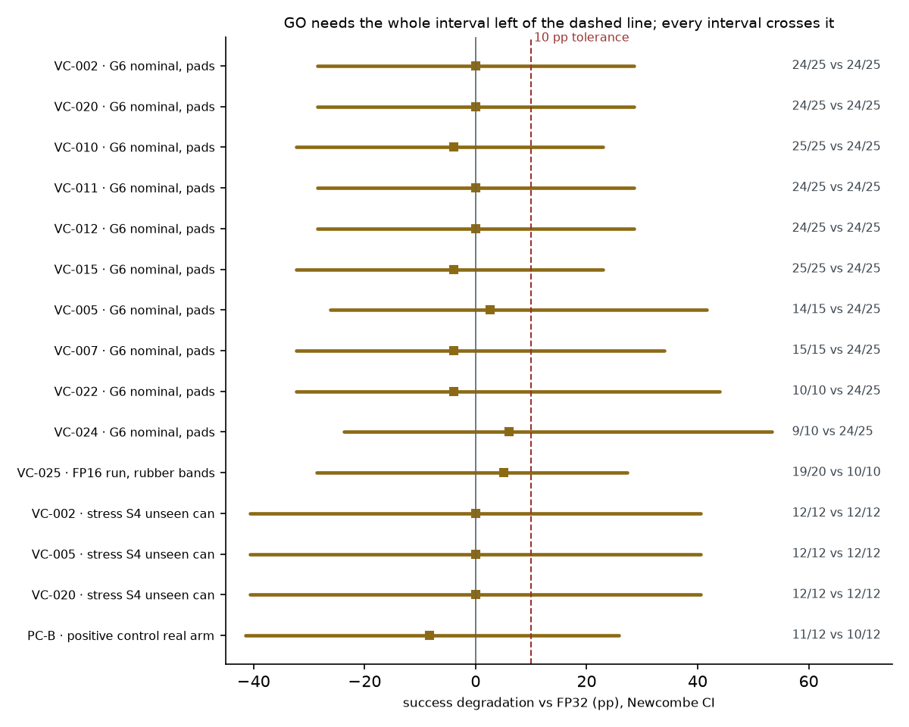
Success vs FP32 per candidate: every Newcombe interval crosses the 10 pp tolerance, so no GO yet.
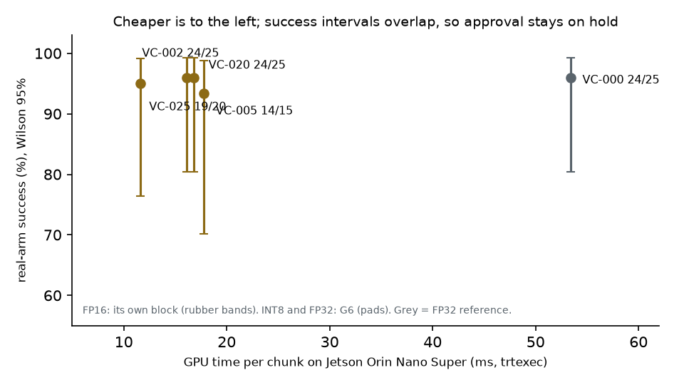
GPU time on the device vs real-arm success: FP16 is cheapest; success intervals overlap.
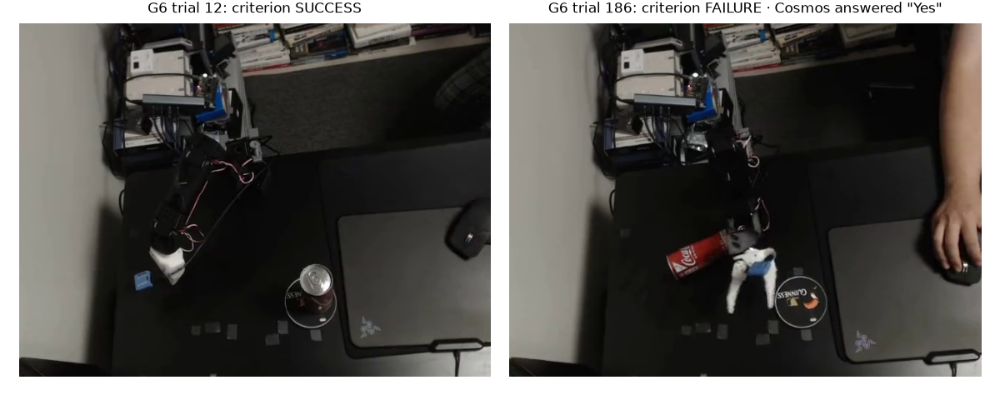
The frames behind two verdicts: a success, and a failure that Cosmos's first setup called a success.
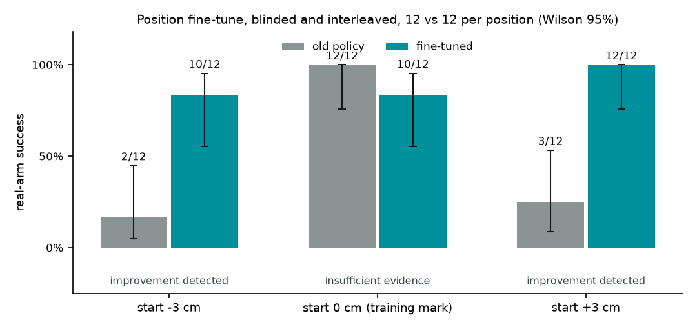
Position fine-tune: fine-tuned vs old policy at -3 and +3 cm (12 vs 12 each) and at the training mark (T0 + T0R pooled, 24 vs 24); interleaved under sealed schedules, operator blinding partial.
Pre-registered contrasts
§7.2–7.4 · Newcombe 95%
The primary endpoint is EP-1. No gap was detected. The noise floor sits in the same picture:
the same cell measured on another day has a wider interval than any between-cell contrast.
Difference in success rate, group 1 − group 2, in percentage points. ES-1 is absent: score_align and
score_mag picked the same three cells, so there is no contrast (a valid negative result under §7.3). Holm-adjusted
p = 1.0 for EP-1, ES-2 and ES-3.
Order locks
preregistration §8
Each lock is a real dependency. Its record was committed and pushed before the next step ran, so the
git history proves the order. CI checks the integrity of the LOCK-2 record. The trial runner's own pre-run check (schedule seal
and LOCK-2) was added after all real-arm blocks had finished; during the experiments the order was enforced by the commits.
LOCK-1
Data split fixed → policy training120 demos, 80/20/20 from a seeded hash
done 10-07
LOCK-2
All audit scores frozen → first real trial5 predictors over 24 INT8 cells, rankings hashed
done
LOCK-3
225 main + 20 retest trials logged → first analysis runsealed log hashes fixed before unsealing
done 10-11
STRESS v1
Pads removed: stopped by the S0 rule (8/24 < 12)no pattern by fidelity: worst-fidelity cell 3/6, FP32 1/6 (descriptive)
unsealed 10-13
STRESS v2
Rubber-band gripper: S0 23/24, S1 0/3 (stopped), S4 48/48outcome re-judged offline from video (§9); success decisions use Newcombe intervals, fixed before unsealing (§10)
unsealed 10-13
FP16
FP16 19/20 · FP32 10/10 · INT8 10/10, interleavedpre-registered; unsealed after the post-lock hash
unsealed 10-13
POS. CTRL
PC-B 11/12 · FP32 10/12, interleavedoffline NO-GO; real arm insufficient evidence, warning not confirmed
unsealed 10-13
FINE-TUNE
+3 cm 12/12 vs 3/12 · −3 cm 10/12 vs 2/12 · mark 22/24 vs 23/24 (T0 + T0R)improvement detected off the mark; the training mark undecided
unsealed 10-14 / 10-15
REACH
−6 cm 8/12 vs 0/12 · +6 cm 0/12 vs 0/12 · yellow can 0/12 vs 3/12; re-test without the markers: 0/12 vs 0/12 twiceamendments 7 and 8; a knocked wrist camera noted
unsealed 10-18 / 10-21
INT8 CHATTER
Q8B: VC-002 0.497 vs FP16 0.391, p = 0.12the post hoc 2× pattern not confirmed; six Q8 trials discarded unopened (scene deviation)
unsealed 10-20
HEALTH
H1 chatter 0.242 (unclear) · H2 0.106 after fixing the wrist mount (back to nominal)non-blind checks with readings fixed before each run
done 10-20 / 10-21
FINE-TUNE v2
Yellow can 12/12 vs 7/12 · +6 cm 12/12 vs 2/12 · mark 12/12 vs 12/12 (against FT)amendment 9; improvement detected for both gaps, no drop at the mark
unsealed 10-22
LOCK-4
Analysis complete → video and narrativeall 22 sealed logs unsealed and verified before the final video (v11) and write-up; no new real-arm block before submission
done 10-23
Setup & resources
one task · one arm · cloud for training, audit and AI layers
The task is to pick up an unopened 268 g cola can from a marked start spot and stand it upright on a
fixed coaster. A person teleoperates the SO-101 leader arm to record demonstrations. The policy then drives the
follower arm from a Jetson Orin Nano Super, seeing what the two cameras see.
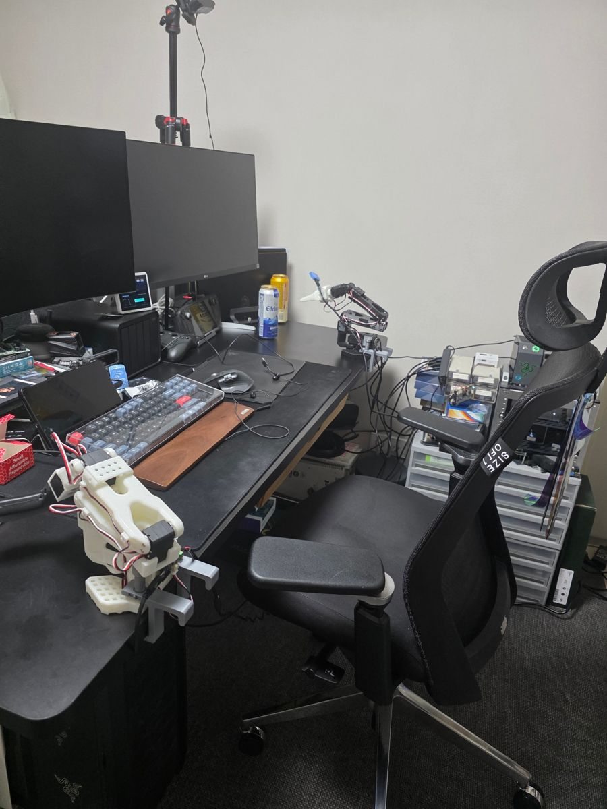
1234
1Overhead camera, Logitech C922, 640×480, exposure and white balance locked
2SO-101 follower arm (Feetech STS3215), driven by the policy. OpenMV AE3 wrist camera, 320×200; rubber-band grip since stress v2
3SO-101 leader arm, used only to teleoperate the demonstrations
4Jetson Orin Nano Super, behind the chair (green power light): runs the TensorRT policy at 30 Hz in 15 W mode, plus the trial runner and the preflight
The rig: cameras, the two arms and the Jetson that runs the policy.
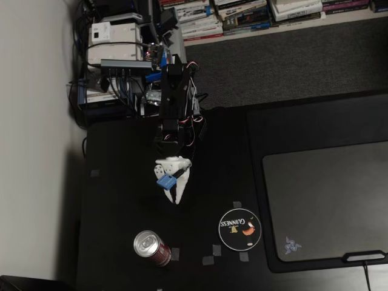
Start: the policy's overhead view
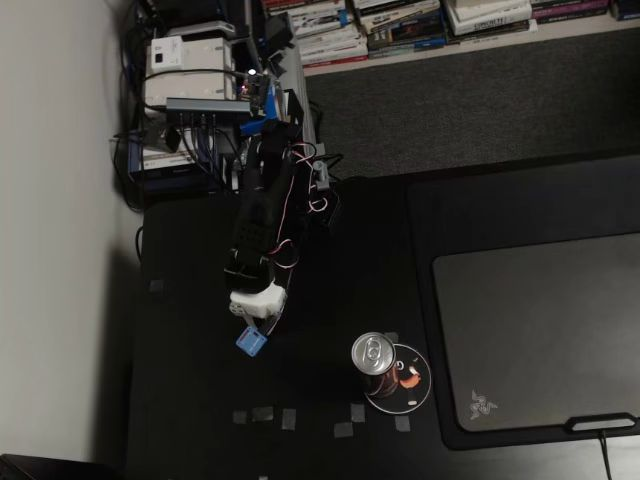
Success: the can stands on the coaster
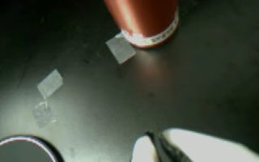
Wrist view at the start
Data. 120 teleoperated demonstrations (65,424 frames at 30 fps). They were split 80 / 20 / 20
into train, validation and audit before training (LOCK-1). Audit episodes are never trained or calibrated on.
chans/quantgate-so101-coaster on the Hugging Face Hub.
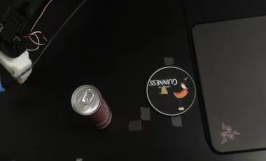
−4 cm
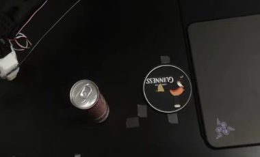
−2 cm
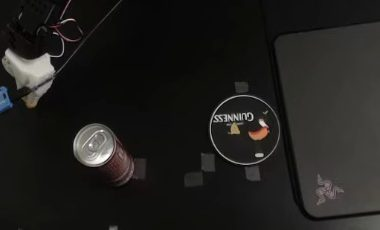
0 cm
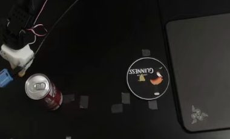
+2 cm
+3 cm held out for evaluation
+3 cm
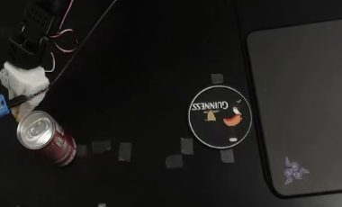
+4 cm
Fine-tune task: start-position shift. A 3 cm shift dropped success to 0/3, so we recorded 50
new demonstrations at −4, −2, 0, +2 and +4 cm (10 each; chans/quantgate-so101-coaster-positions).
We fine-tuned 20k steps from the G2 checkpoint on them, mixed with the 80 training demos. The model is
evaluated blinded at the unseen +3 cm and at the original mark, against the old model, under a pre-registered
rule.
Step
What ran
Where
Measured
Train
LeRobot ACT, 51.6M parameters, 100k steps, one FP32 checkpoint (G2)
Nebius Jobs · L40S
1 h 57 min
Fine-tune
ACT from G2, 20k steps on 50 position demos + 80 train demos, seed 1001
TensorRT 10.3 with a frozen timing cache; latency and energy with trtexec and tegrastats
Jetson Orin Nano Super · 15 W
FP16 11.6 ms · 82 mJ
Audit
25 cells scored on 2,000 held-out states, with bootstrap
Nebius Jobs · CPU fan-out
25 jobs
Supervisor, judge
Cosmos-Reason2-2B (vLLM), 2 Hz shadow supervisor and an end-of-trial question
Nebius AI Endpoint · L40S
≈330 ms round trip
Report, errata
Nemotron 3 Super explains code-decided verdicts and checks Tavily field reports against our facts
Nebius Token Factory
4.2 s per errata call
Record
5 experiments, 73 runs, filled from committed artifacts
Nebius Managed MLflow
short-lived
Portability
Same checkpoint on another INT8 target: backbones on Hailo-8, transformer on CPU
Raspberry Pi 5 + Hailo-8
239 ms total · over the 200 ms chunk deadline
Agent layer
§6 · product components, not hypothesis tests
D4Live supervisor · Cosmos-Reason2-2B on a Nebius AI Endpoint (L40S, vLLM), 2 Hz, shadow mode. Across the 215 G6 trials it watched live (the first 30 ran before it was deployed) it never left CONTINUE and flagged 0 of 7 failures.~330 ms RTT
D4 judgeEnd-of-trial judge · first setup: "Yes" on all 245 G6 final frames (0 of 7 failures). Offline re-evaluation on 409 recorded trials (dev 136 / eval 273): the chosen prompt caught 20/21 held-out failures with 5/252 false alarms (C0 baseline: 1/21). Video input collapsed to always-No.eval 20/21 · 5/252
D3Deployment report · report v3: code writes every verdict, number, status and next action. Nemotron 3 Super on Token Factory writes only the explanation and the open questions, and code rejects that text if it has digits, verdict labels, approval words or known misreadings. v2 checked numbers sentence by sentence and let three wrong sentences through (external review); it is kept as history. The first v3 runs misread power and the judge's reliability; those patterns are now rejected.v3 · 0 findings
D5Errata collector · Tavily queries derived from the real TensorRT, device and operator set, frozen as a hashed snapshot.snapshot hashed